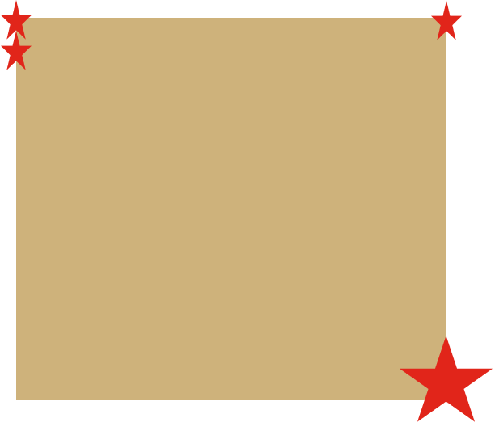

iterative
design
please scroll down for more projects
Nathalie Silverentand
UX Overhaul
Project 3
UX Overhaul
Project 3
UX Overhaul
Project 3
Recently, I teamed up with Nathalie Silverentand, an artist from the Netherlands, for Semester 2. Our job? To give her brand a makeover and whip up a fresh website design. She wanted something simple yet colorful, so we kept that vibe in mind as we got creative.
Our first crack at the website got dubbed "safe," "plain," even "boring" by our teachers. But their push for a more modern vibe really lit a fire under us. And you know what? It paid off big time when presentation day rolled around. Our risky move caught Nathalie's eye, and she picked our crew. We went all out, adding animations and splashes of color. And guess what? She loved it! That win made me realize it's okay to take a leap and shake things up.
 More in detail down here
Initial Designs
Initially, all group members unanimously agreed that each member would create a design. The plan was to gather feedback from teachers, and then collaborate to merge our ideas into one cohesive design. So, I began working on my design. While browsing competitors' websites, I noticed they all embraced simplicity, allowing the artwork to shine—just as my client desired. Thus, I crafted my version of a minimalistic website tailored to my client's preferences.

Mark Maggori (painter website inspiration)